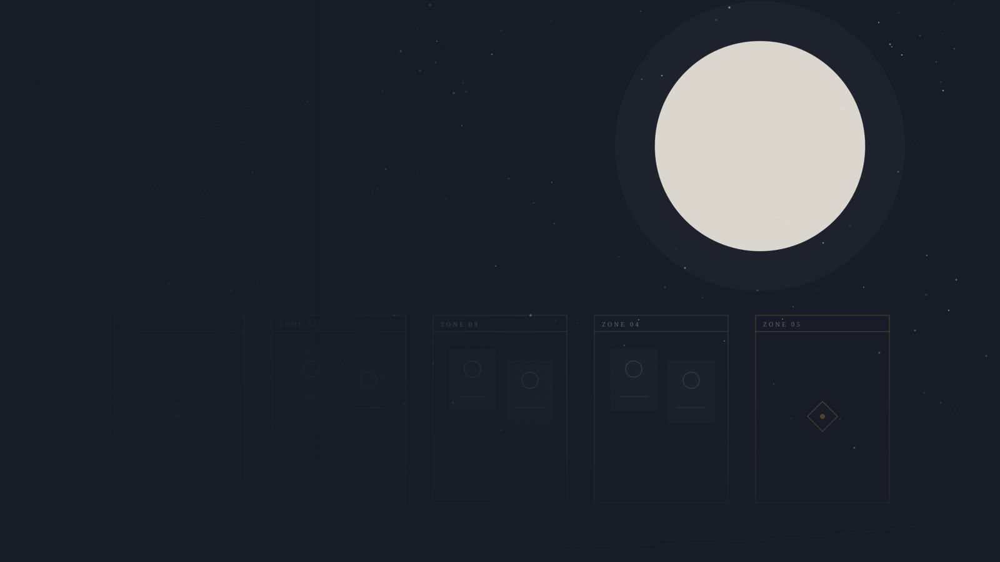

TEXT ADVENTURE / GODOTADV
文字冒险
场景、立绘、分支、存档。小说里被略过的那部分，交给玩家去走。它不追求「自由度」，追求的是「你确实在场」。

TEXT ADVENTURE × CARD GAME
WALK · THEN PLAY
文字冒险负责「你遇见谁」，卡牌负责「你拿什么去换」。
当前只公开系统层。角色、卡牌与关系谱随正文登场，未登场的一律不在这里。
TWO HALVES
文字冒险不解释卡牌，卡牌不解释文字冒险。它们共用人物、地理与历史，但各自承担不同的「选择」。
场景、立绘、分支、存档。小说里被略过的那部分，交给玩家去走。它不追求「自由度」，追求的是「你确实在场」。
随机地图、双信仰、40 张卡组。战区数量、排布与容量由地图决定；战士、法师、射手三类单位，三种距离。防御是可再生的生命，也是可以打空的资源。
PUBLIC FACTIONS
构筑时选一个阵营，只带该阵营与通用牌。当前只公开两个。
人类、精灵与矮人在五百年前的战争中建立的同盟。卡牌档案尚未公开。
魔王欧兰麾下的七个军团。正文只讲到这场战争，军团与领袖的卡牌尚未公开。
当前只公开这两个阵营。角色卡、英雄与关系谱随正文登场，未登场的不在这里。
FOUR WAYS IN
规则、图版、卡牌档案与关系谱。后两个目前是封存状态。